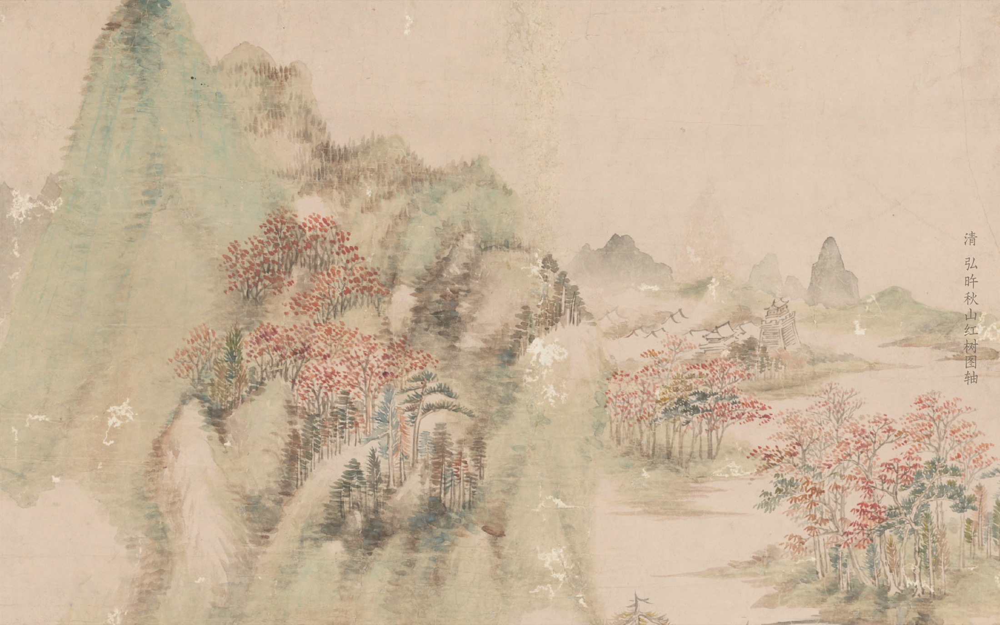

清 · 弘旿《秋山紅樹圖軸》
Ziyu Qiu
邱子吁
Historian of Late Imperial/Early Modern China
Ph.D. Student, History and East Asian Languages · Harvard University
Ziyu Qiu works on the social history, material culture history, and STS of late imperial China. She is particularly interested in how material objects influenced people’s lives at various levels within the context of the Qing Empire, as well as the dynamics between materiality and the production and circulation of knowledge.
Ziyu entered the History and East Asian Languages (HEAL) program in 2026. Prior to that, she received her B.A. in History (magna cum laude) from Duke University / Duke Kunshan University and her A.M. in Regional Studies: East Asia from Harvard University.
Her master’s thesis examined the history of the use and counterfeiting of silver as currency in late imperial China from a material culture perspective and explored the relationship between counterfeiting and knowledge production in the early modern era.
Currently 近況
-
March 2026
“Silverstealers: Knowledge, Technology, and the State in the Making of Fake Silver in Qing China”
Association for Asian Studies Annual Conference
Individual paper, drawn from the A.M. thesis.
-
May 2026
Silverstealers: Craftsmen, Technology, and State in Qing China
A.M. thesis · Harvard University
Advised by Prof. Mark C. Elliott.
-
October 2025
“Listing ‘Grand Titles’ in Manchu: A Late Qing Bilingual Version of Hongcheng tongyong 鴻稱通用 in Harvard-Yenching Library”
The Manchu Studies Group
Contact 聯繫
- ziyuqiu@fas.harvard.edu
- Fields
- Qing history · Material culture · History of knowledge
- Languages
- Chinese · Classical Chinese · English · Manchu · Japanese